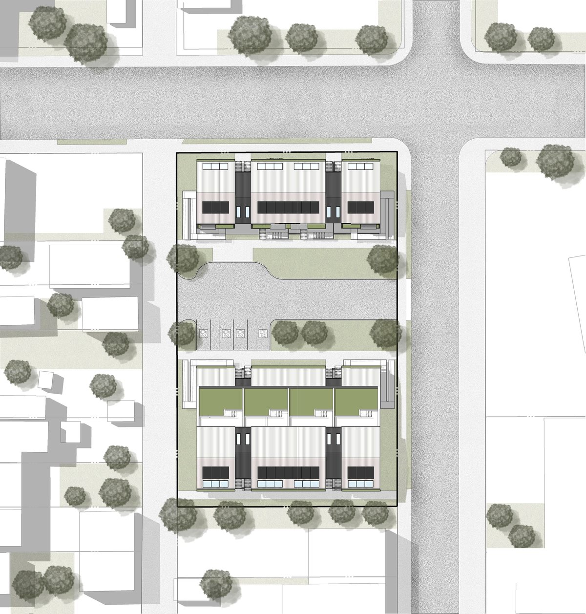

International Ideas Competition · 2025
Denver's Missing Middle
An evolutionary mixed-income townhouse community for Denver's Globeville neighborhood, designed around modular bays, live/work options, and shared outdoor amenities.
Denver faces a chronic shortage of attainable and affordable housing, causing displacement and mass homelessness. Large areas of underused parking lots and industrial lands present an opportunity to increase housing supply. This project proposes evolutionary missing-middle housing in the form of townhouses to improve affordability, diversity, and density in established neighbourhoods predominantly featuring single-family detached homes.
The proximity to the South Platte River corridor is key to providing recreation space close to nature to the residents within walking distance and to fostering a sense of community connected to the river. The South Platte River corridor, currently dominated by vacant industrial lots, is undergoing revitalization with new parks and redevelopment. This project could be replicated in a series of other underutilized lands surrounding the river in order to create an integrated system of missing-middle housing community.
The proposed site is located in the Globeville neighborhood, predominantly featuring single-family housing, and lacking density and affordable options. Designated as a Community Center in Denver's 2040 Plan, this site supports family-friendly housing with opportunities for jobs, offices, and retail, in addition to being close to transit, schools, and shops.
Concept Design & Community Impact: The proposal for the Globeville site is a design for an evolutionary mixed-income townhouse community totaling 27 units. It features modular stacked and back-to-back townhouses around accessible parking and shared outdoor amenities such as a community garden. The 8 m-deep by 8 m-long bays can be combined horizontally and/or vertically to create units of various sizes (from XS to XL), ranging from studios to units with three or more bedrooms, including lofts. This design approach fosters diversity in unit sizes and types, allowing for a mix of income levels and tenure types, and offers the possibility of expanding or shrinking units over time.
To preserve affordability into the future, it allows for both rental and ownership models, including combinations. Live/work layouts integrate commercial spaces at street level to activate the public realm and create job opportunities, featuring office spaces in upper levels as well. This also creates an opportunity for residents to increase their income by renting an additional space in their homes.
The design supports residents' long-term adaptability and resilience by enabling unit expansion as incomes and families grow, allowing them to stay and thrive in their community. Although the proximity to revitalized riverfront parks would normally trigger gentrification, this project mitigates it by bringing together a variety of income levels to co-exist while increasing density to address the housing shortage.
Modular bay unit types
- XS: 30-49 m² studios and work units.
- S: 50-70 m² one-bedroom, work, and barrier-free units.
- M: 71-90 m² one-bedroom, live/work, loft, and rental combinations.
- L: 91-110 m² two-bedroom and live/work configurations.
- XL: 111-220 m² three-bedroom, den, live/work, and rental combinations.


Related projects
Explore adjacent work

Waterloo Centerpiece
A high-density mixed-use district with seven buildings, thirteen towers, pedestrian-oriented streets, green spaces, and transit connectivity.

WaterWoven
A master plan for flood-resilient, evolutionary amphibious housing and green infrastructure in the Roncador River region.

Cambridge Highlight
A multi-building residential redevelopment introducing 1,046 apartment units and active street edges on a former industrial property.